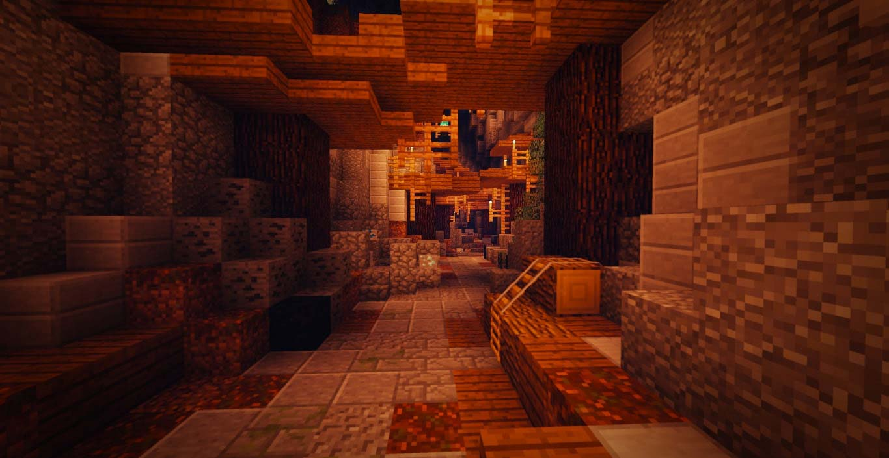
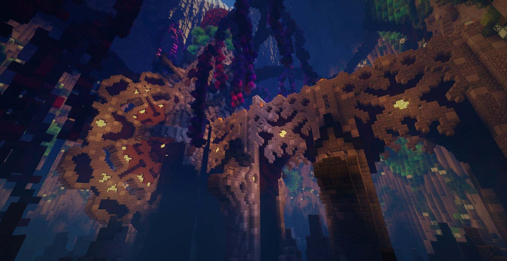
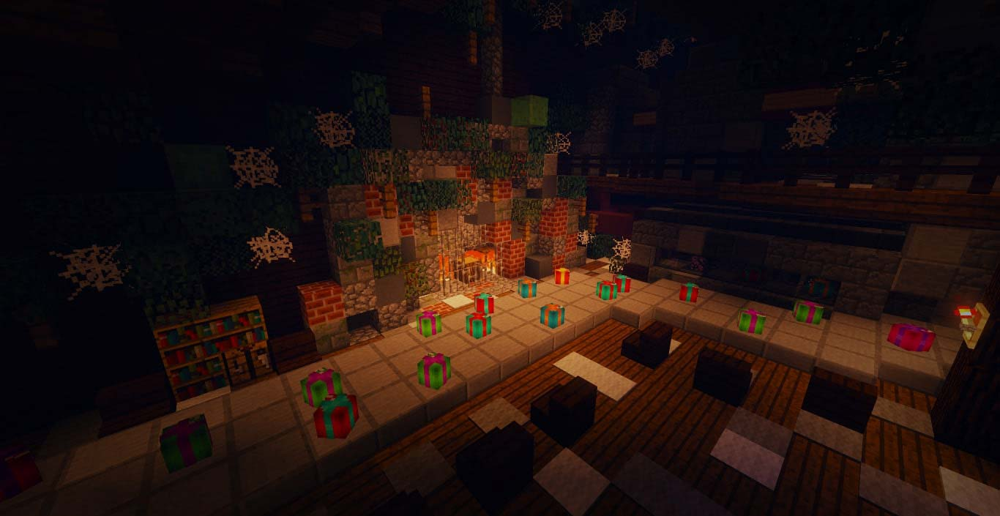

詛咒之冬 Winter of Curse
前言
哈囉！大家好！讓各位久等了。
夢想之都工作室２０１９年第２號作品 《詛咒之冬 Winter of Curse》
這是我們首次在ＣＴＭ中，設計這樣的玩法，在製作時用了許多巧思！
看到這次的製作群中有米格的名字嗎？嘿嘿，遊玩時請小心點囉～
劇情
風雪交加的夜晚，趕路回鄉的旅人。
遠方的燈火，溫暖的休息處。
然而，出乎意料的是...
冷清的城鎮，遙遠的火光...
襲擊的鎮民，發狂的眾人...
突然出現的話語，滴滴作響的時鐘；
失去秩序的世界，逐漸貼近的鏡像。
這個世界，究竟發生了什麼？
地圖預告片
動畫後製：派大星 | 音樂製作：白蘋
地圖場景







